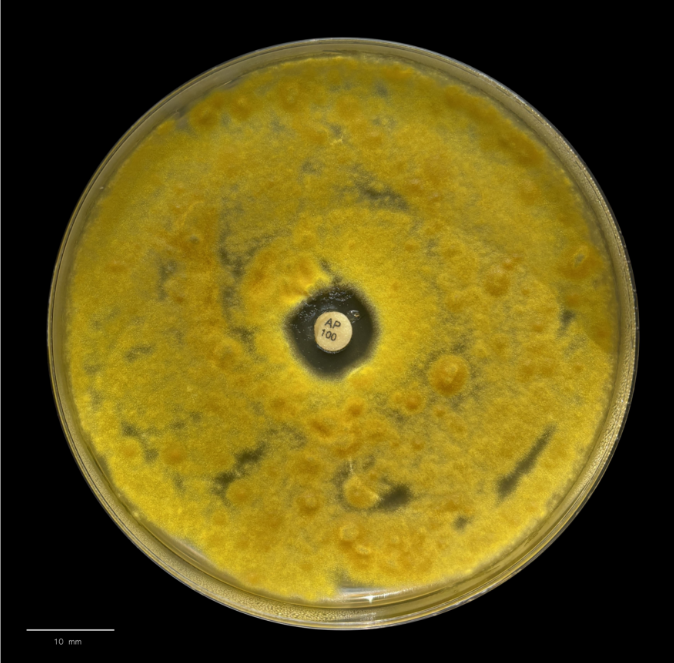
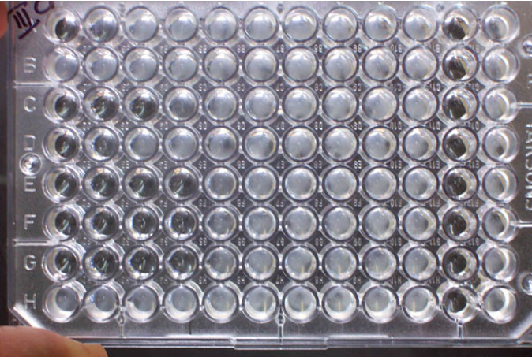
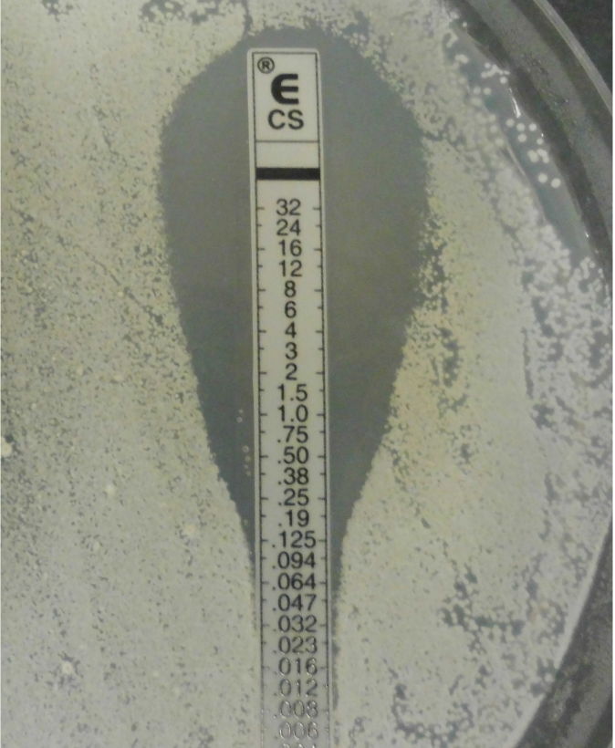

Aula 5
Testes de suscetibilidade a antifúngicos (TSA)
Você sabia que o primeiro medicamento de uso sistêmico empregado no tratamento de micoses foi o iodeto de potássio em solução saturada? Isso aconteceu no início do século passado. Durante quase um século não se dispunha de medicamentos antifúngicos específicos.
Na década de 1950 foram introduzidas a anfotericina B, a griseofulvina e a nistatina. E só no final da década de 1970 os antifúngicos de maior espectro de ação que podiam ser administrados por via oral foram desenvolvidos, como o cetoconazol. No final da década de 1980 surgiram as alilaminas e os triazólicos (derivados azólicos de 2ª geração). Na virada do século introduziram-se outros grupos farmacológicos, como as equinocandinas, além de derivados azólicos de 3ª geração, como voriconazol, posaconazol e isavuconazol.
Ainda hoje o arsenal terapêutico para o tratamento das micoses é pequeno se comparado aos antibacterianos e restringem-se a poucos grupos farmacológicos, embora as micoses estejam aumentando na população, seja ela imunocompetente ou não.
Diversos fatores podem influenciar no tratamento e na escolha do fármaco como: agente etiológico, localização e extensão das lesões, fontes de contágio, status imunológico do hospedeiro, comorbidades, gravidez, idade, efeitos adversos, interações medicamentosas, ação biológica, farmacocinética, dose, entre outros.
A descoberta de novos alvos e medicamentos para o tratamento de doenças fúngicas é uma necessidade urgente, mas também um desafio, porque há muitas semelhanças entre a célula fúngica e a célula humana a nível bioquímico (metabolismo) e morfológico. Os principais alvos da terapia antifúngica são: membrana plasmática; parede celular; biossíntese de proteínas e ácidos nucléicos, e divisão celular.
Mecanismos de ação de antifúngicos
Os fármacos que atuam na membrana plasmática do fungo são: alilaminas, derivados azólicos, derivados morfolínicos que atuam na biossíntese do ergosterol, e poliênicos que se ligam diretamente à molécula de ergosterol.
Nesse grupo, a terbinafina se destaca e pode ser utilizada por via oral ou uso tópico. Espectro de ação: dermatofitose, onicomicose, cromoblastomicose e esporotricose.
- Mecanismo de ação: as alilaminas inibem a enzima esqualeno-epoxidase, que transforma esqualeno em lanosterol. Com isso, há acúmulo de esqualeno no citoplasma e falta de ergosterol na membrana celular do fungo. Leva à morte celular do fungo.
São moléculas sintéticas com um anel de cinco carbonos unido a uma cadeia alifática com um grupo fenil, que se dividem em dois grupos de acordo com o número de átomos de nitrogênio presentes em sua composição química, dois no caso dos imidazólicos e três no caso dos triazólicos. Os azólicos constituem um dos principais avanços terapêuticos da micologia. Entre os imidazólicos podemos citar: econazol, clotrimazol e miconazol, todos de uso tópico e que podem ser utilizados no tratamento de candidíase vulvovaginal e onicomicoses; e o cetoconazol que pode ser utilizado via oral no tratamento da pitiríase versicolor, por exemplo. Em relação aos triazólicos, podemos citar itraconazol e fluconazol (derivados azólicos de 2ª geração), que podem ser utilizados por via oral ou intravenosa. Itraconazol é o fármaco de primeira escolha para tratamento da esporotricose. Também pode ser utilizado no tratamento da paracoccidioidomicose, histoplasmose e cromoblastomicose. Fluconazol pode ser utilizado, por exemplo, no tratamento da candidíase mucocutânea e da criptococose. Voriconazol e posaconazol (derivados azólicos de 3ª geração) podem ser utilizados por via oral. Ambos podem ser utilizados no tratamento da aspergilose invasiva e da candidíase sistêmica. O voriconazol também pode ser utilizado em infecções graves por Fusarium e Scedosporium spp., enquanto o posaconazol é utilizado no tratamento da criptococose e em formas graves de esporotricose. Já o isavuconazol (o mais novo triazólico) pode ser utilizado por via oral no tratamento de aspergilose invasiva e de mucormicose.
- Mecanismo de ação: agem na biossíntese do ergosterol. Os derivados azólicos atuam na enzima 14α demetilase (codificada pelo gene ERG 11), que é dependente do citocromo P450 inibindo a produção de ergosterol e acumulando esteróis tóxicos intermediários, causando desestabilização e ruptura da membrana plasmática do fungo.
Amorolfina. Tratamento tópico (cremes e esmaltes). Atividade contra onicomicose causada por dermatófitos e não dermatófitos.
- Mecanismo de ação: os derivados morfolínicos inibem duas enzimas na biossíntese do ergosterol: 14α redutase e 7,8 isomerase, impedindo a transformação de fecosterol em ergosterol.
Nistatina: uso tópico no tratamento de candidíase cutaneomucosa/ oral.
Anfotericina B: tratamento de micoses sistêmicas. É um medicamento de uso sistêmico, administrado por via intravenosa. A administração deste fármaco pode ser complicada devido à sua nefrotoxicidade, podendo ser necessária a redução na dose do fármaco administrado ao paciente ou mesmo o término da terapia. O risco potencial de toxicidade, especialmente em pacientes com função renal comprometida, levou ao desenvolvimento de formulações lipídicas da anfotericina B. Atualmente, existem três formulações disponíveis: anfotericina B desoxicolato (D-AMB) (formulação convencional) e outras duas formulações lipídicas: anfotericina B complexo lipídico (ABLC) e anfotericina B lipossomal (L-AMB). Outros efeitos adversos da anfotericina B: hepatotoxicidade; neurotoxicidade; a infusão intravenosa causa febre, calafrio, hipotensão, vômito, dispneia, cefaleia, tromboflebite no local da injeção. Isso ocorre porque o fármaco interage com a molécula de colesterol das células vizinhas, que é muito parecida com a molécula de ergosterol. Assim, ataca o fungo e a célula humana.
- Mecanismo de ação: a molécula de anfotericina B tem afinidade pelo ergosterol presente na membrana citoplasmática do fungo, formando um complexo irreversível, causando seu rompimento, aumento da permeabilidade, extravasamento de conteúdo citoplasmático e morte celular; dano direto à membrana pela geração de uma cascata de reações oxidativas deflagradas pela oxidação da própria droga, o que pode contribuir para sua atividade fungicida rápida via geração de radicais livres tóxicos.
Os fármacos que atuam na parede celular do fungo são: equinocandinas (caspofungina, micafungina e anidulafungina), que são utilizadas por via intravenosa no tratamento da candidíase sistêmica e na aspergilose invasiva.
- Mecanismo de ação: inibem a enzima beta (1,3) glucana sintetase, consequentemente, ocorre a depleção da beta (1,3) glucana, que é um importante constituinte da parede celular.
O fármaco inibidor da biossíntese de proteínas e ácidos nucléicos é o Flucitosina ou 5-fluorocitosina (5-FC). É um análogo fluorado de pirimidina e pode ser utilizado por via oral ou intravenosa. É um fármaco eficaz em combinação com a anfotericina B no tratamento da criptococose.
- Mecanismo de ação: 5-FC entra na célula por meio da enzima citosina permease; 5-FC é convertida a 5-fluor-uracil (5-FU) pela enzima citosina deaminase; 5-FU pode ser incorporada ao RNA inibindo a síntese de proteínas ou pode inibir a enzima timidilato sintase, inibindo a síntese de DNA.
Já o fármaco que atua na divisão celular é a griseofulvina. Pode ser utilizada por via oral. Possui efeitos adversos como hepatotoxicidade e teratogenicidade. É um fármaco eficaz contra dermatófitos, sem atividade antifúngica contra leveduras.
- Mecanismo de ação: interage com as subunidades alfa e beta da tubulina, inibindo a formação do fuso mitótico, impedindo a separação dos cromossomos.
Além dos antifúngicos convencionais novos antifúngicos estão sendo incorporados ao arsenal:
Antifúngico triterpenoide de primeira classe. Mecanismo de ação: inibe a biossíntese de beta (1,3) glucana na parede celular fúngica, um mecanismo semelhante ao das equinocandinas. Foi aprovado em 1º de junho de 2021 pelo FDA (Food and Drug Administration) órgão governamental dos Estados Unidos da América (EUA). Indicação: terapia oral para tratamento da candidíase vulvovaginal. Estudos in vitro demonstram atividade contra biofilmes, Aspergillus spp., Pneumocystis jirovecii e a maioria das cepas resistentes às equinocandinas e azóis.
2ª geração de equinocandinas. Esse fármaco foi aprovado em 22/03/2023. Formulação intravenosa. Tratamento de candidemia e candidíase invasiva. Mecanismo de ação: inibe a enzima beta (1,3) glucana sintase na parede celular fúngica.
Antifúngico candidato a um novo mecanismo de ação. Inibe Inositol acetiltransferase GWT1, que é essencial para o tráfego e ancoragem de manoproteínas na parede celular. As manoproteínas são responsáveis pela integridade da parede celular, adesão, patogenicidade, driblam o reconhecimento da célula fúngica pelo sistema imune do hospedeiro. Formulação oral e intravenosa. Atividade antifúngica contra Candida spp., Aspergillus spp., Fusarium spp., Scedosporium spp., micoses endêmicas, fungos da ordem mucorales. Ampla distribuição tecidual.
Antifúngico candidato a um novo mecanismo de ação. Nova classe: OROTOMIDA. É uma molécula sintética capaz de inibir a enzima da biossíntese de pirimidina DIHIDRO-OROTATO DESIDROGENASE – DHODH. A inibição da biossíntese de pirimidina altera a síntese de DNA e o ciclo celular; a síntese de RNA e a produção de proteínas; a síntese de parede celular e a síntese de fosfolipídios. Amplo espectro. Atividade antifúngica contra Aspergillus spp., inclusive A. fumigatus resistente; Scedosporium prolificans; Fusarium spp. e fungos dimórficos. Tem potencial para tratamento de micoses do sistema nervoso central.
Testes de suscetibilidade a antifúngicos
Há consenso na literatura sobre o aumento na incidência das infecções fúngicas invasivas nas últimas décadas e mudanças no espectro de microrganismos causadores dessas infecções devido ao surgimento de espécies emergentes e resistentes aos antifúngicos.

Quando devo realizar um teste de sensibilidade aos antifúngicos (TSA)?
Os testes de suscetibilidade antifúngica são realizados para fungos causadores de doenças, especialmente quando as infecções são invasivas, quando há casos de recidivas ou falhas na terapia, quando a resistência inerente ou adquirida é uma possibilidade, ou quando a suscetibilidade não pode ser prevista com segurança apenas a partir da identificação da espécie.
O teste de suscetibilidade antifúngica também é importante na vigilância da resistência, em estudos epidemiológicos e na comparação da atividade in vitro de fármacos novos e aqueles já existentes.
O parâmetro mais tradicional para avaliar a susceptibilidade aos fármacos antifúngicos é baseado na concentração inibitória mínima (CIM). Esta é definida como a menor concentração do fármaco capaz de inibir o crescimento fúngico dentro de um período determinado.
Os métodos de diluição em caldo são usados para estabelecer as concentrações inibitórias mínimas (CIMs) dos fármacos antifúngicos. Para a execução dos testes, métodos de referência foram desenvolvidos de acordo com um padrão americano recomendado pelo Clinical and Laboratory Standards Institute (CLSI) e outro seguindo um padrão europeu de acordo com o European Committee on Antimicrobial Susceptibility Testing (EUCAST), ambos para fungos filamentosos e leveduras.
No Brasil, um comitê brasileiro de testes de sensibilidade aos antimicrobianos (Brazilian Committee on Antimicrobial Susceptibility Testing - BrCAST) foi criado com o intuito de promover o desenvolvimento, a padronização e a garantia do controle de qualidade dos testes de sensibilidade antimicrobiana in vitro no nosso país. A partir da Portaria nº 64, de 11 de dezembro de 2018 do Ministério da Saúde, todos os laboratórios clínicos e de pesquisa, da rede pública e privada, de todo o país, passaram a utilizar as normas de interpretação para os testes de sensibilidade aos antimicrobianos, tendo como base os documentos da versão brasileira (BrCAST) do European Committee on Antimicrobial Susceptibility Testing (EUCAST).
A microdiluição em caldo, segundo o documento BrCAST/ EUCAST E.Def.7.4, é o método de referência padronizado para testar a susceptibilidade aos antifúngicos de leveduras que causam infecções invasivas, como Candida spp. e Cryptococcus spp., além de fungos filamentosos como Aspergillus spp. Apresenta boa reprodutibilidade intralaboratorial e interlaboratorial para a avaliação in vitro dos testes de susceptibilidade aos antifúngicos, mas vale ressaltar que trata-se de um método laborioso, que exige habilidade técnica para sua realização e interpretação dos resultados.

Teste de suscetibilidade a antifúngicos pelo método de microdiluição em caldo
Veja a Comparação entre os protocolos de referência para Microdiluição em Caldo pelo CLSI e EUCAST/ BrCAST:
| CLSI | EUCAST/ BrCAST | |
|---|---|---|
| Acesso aos documentos | Mediante pagamento. | Gratuito. |
| Meio RPMI 1640 sem bicarbonato de sódio e com L-glutamina + MOPS | Sim. | Sim. |
| Glicose | 0,2% | 2% |
| Concentração do Inóculo | 5 × 10² – 2,5 × 10³ | 0,5 – 2,5 × 103 |
| Leitura | Visual. | Espectrofotométrica. |
| Microplacas de ELISA | Fundo em U. | Fundo chato. |
Os métodos comerciais podem ser utilizados em laboratórios clínicos de rotina para teste de sensibilidade antifúngica. Entre eles podemos citar: fitas contendo gradiente de concentrações de antifúngicos e placas de 96 poços contendo diluições de diferentes antifúngicos e um agente revelador. Esses dois métodos podem ser utilizados, tanto para leveduras como para fungos filamentosos. Há também sistemas automatizados que consistem em um cartão com diferentes concentrações de antifúngicos no qual a levedura é inoculada e depois colocada em um equipamento, o qual fará a determinação da CIM.
As fitas comerciais contendo gradiente de concentrações de antifúngicos são capazes de determinar a CIM de sete fármacos antifúngicos (anfotericina B, fluconazol, voriconazol, 5-fluorocitosina, caspofungina, micafungina e anidulafungina). Baseia-se em um gradiente contínuo de concentrações predefinidas do antifúngico, que estão impregnadas em uma fita plástica de material inerte, que se difunde em meio sólido. É um método rápido e de fácil execução, sendo utilizado em laboratórios clínicos de rotina.
No entanto, a leitura é visual, levando à subjetividade na determinação da CIM, que é determinada no ponto de interseção da elipse formada com a fita. É um método de custo elevado.

Teste de suscetibilidade a antifúngicos pelo método de gradiente em tiras (também conhecido por E-test)
As placas de 96 poços contendo diluições de diferentes antifúngicos e um agente revelador fazem parte de um teste colorimétrico comercial para a determinação de concentrações inibitórias mínimas. Permite testar até nove fármacos com diferentes concentrações antifúngicas em uma única placa: anfotericina B; fluconazol; 5-flucitosina; itraconazol, voriconazol, posaconazol; caspofungina, micafungina e anidulafungina. Para realizar o teste, uma suspensão de inóculo (0,5 McFarland) será inoculada em um meio de cultura fornecido pelo fabricante do teste. As placas serão cobertas com adesivo e incubadas a 35 °C por 24 horas. A leitura é realizada após mudança de cor do corante revelador e o ponto final pode ser determinado por leitura visual. Menor custo por teste.
O sistema comercial automatizado com cartões de antifúngicos é capaz de determinar a susceptibilidade aos antifúngicos de seis fármacos antifúngicos (anfotericina B, fluconazol, voriconazol, 5-fluocitosina, caspofungina e micafungina) frente a leveduras de importância médica. Fungos filamentosos não podem ser testados por essa metodologia. O cartão possui 64 poços contendo diluições dos seis agentes antifúngicos, sendo necessário para realização do ensaio preparar uma suspensão da levedura a ser testada (escala 2 McFarland) seguida de uma diluição conforme orientações do fabricante. As etapas subsequentes de inoculação, selagem, incubação e leitura do cartão são realizadas pelo equipamento, que, por meio de análise espectrofotométrica, detecta quando o poço apresenta bom crescimento da levedura. Em média, após 18 horas de incubação no equipamento, os resultados são validados e interpretados por um software acoplado ao sistema, que determina o valor da CIM para cada antifúngico testado.